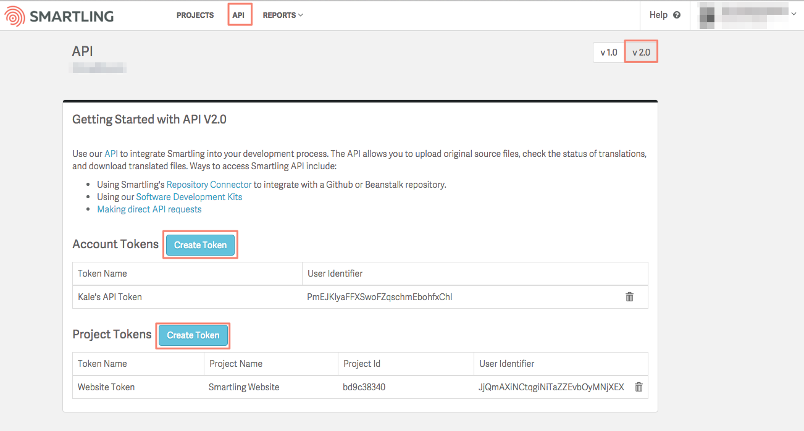
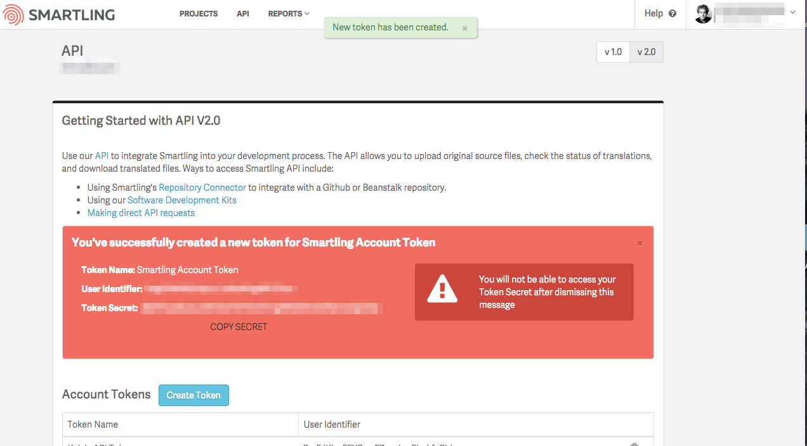

Every call to a v2 API endpoint must include an access token in the header. Access tokens are acquired by calling the Authentication API, using your User Identifier and User Secret (ask your Client Services manager to assist you with setting up an API User).
To obtain a User ID and User Secret:
(1) Navigate to Project Settings > API, switch to the v2.0 tab, click Create Token and enter a name.

(2) Once the token is created, record your User ID and User Secret for use in Authentication requests. Note: The User Secret is only available when the token is first created so make sure you record it immediately.

Authentication header format is Authorization: Bearer {token}
Access tokens expire every 5 minutes, but you can get a new token by calling the Refresh Authentication API, using the refresh token returned by a successful Authentication. Refresh tokens are valid for 1 hour. You can refresh your Authentication for up to 24 hours before you need to log in again with an Authenticate request.
There are two main ways to handle Oauth authentication, depending on how you’re using Smartling’s API. The first way is to call the Authentication API before any other API call and pass the access token directly. This is best for intermittent API access.
If you’re integrating Smartling into an application or making a high number of calls, you may want to maintain a current access token as a variable, updating it regularly via the Refresh Authentication API.